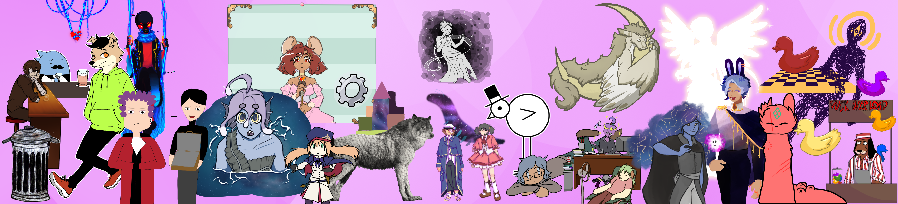
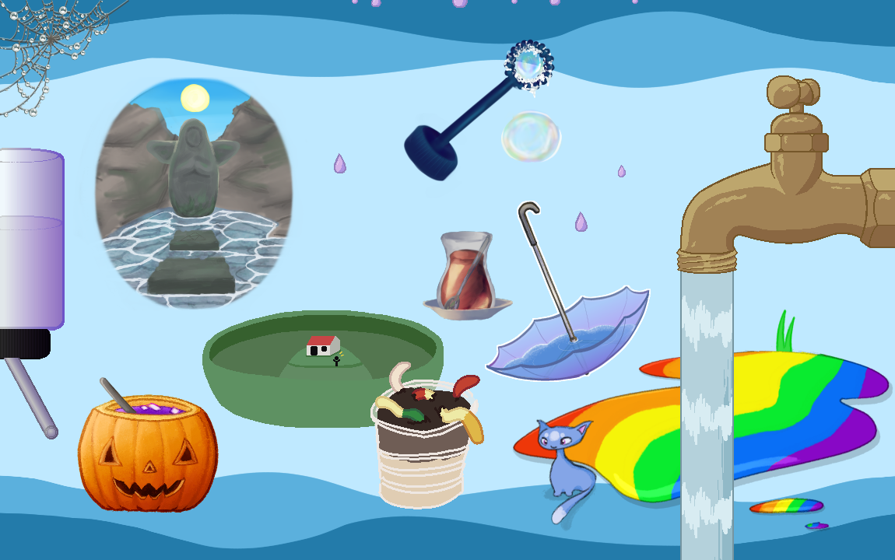
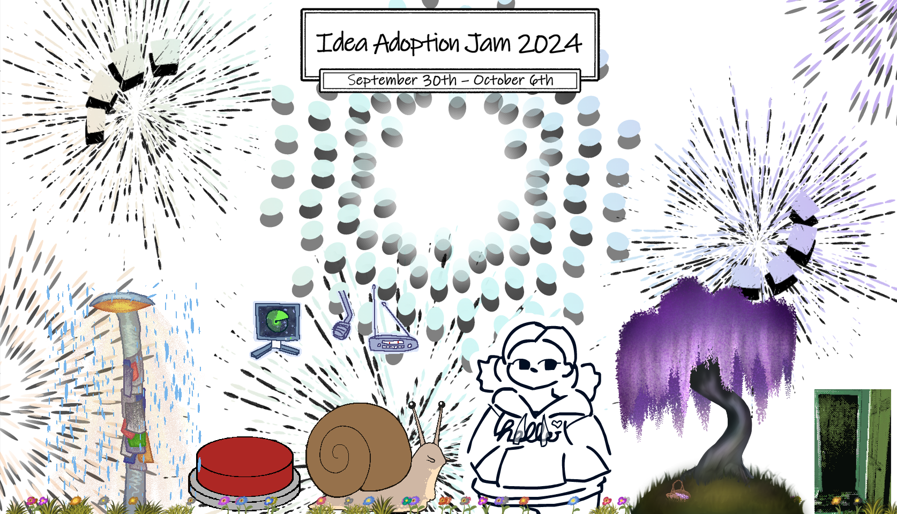
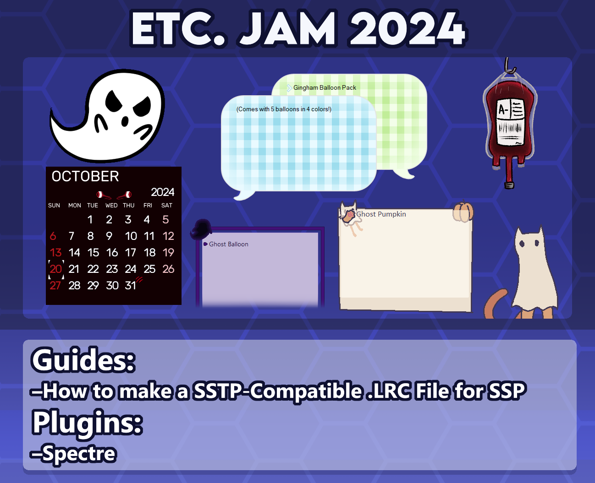

Advent Calendar 2024 - Summary of 2024 in the Ukagaka Dream Team
This article is for the 23rd day of the 伺か・伺的 [第1会場] Advent Calendar 2024. Yesterday I wrote an article about the plugin Spectre, discussing the technical details and writing observations. Today's article will be a year-in-review of events and development within the Ukagaka Dream Team community.
General developments
This year there were not as many large developments outside of events that were hosted. It seems that 2024 was a busy year for the developers working on community resources! That being said, many of our developments from the previous year have begun to show results.
At the very end of 2023, Okuajub released a guide to creating ghosts in Kawari, as well as the CHIPS Template to go with it. This has made Kawari much more accessible to English developers, and we've seen a few ghosts written in Kawari released throughout the year. (There's no specific list for ghosts made this year in Kawari, but you can see all of the ghosts we've made in Kawari—plus some translations—here.)
We've also made small forays into investigating Satori. A few of us participated in ゴースト闇鍋 (Ghost Yaminabe) and became familiar with it that way. One simple ghost was later created in Satori, and a guide to basic Satori syntax was released towards the end of the year. While Satori is not particularly suited for international ghost development, it may be to our benefit to have a deeper understanding of it, especially for events that may rely upon it. It will be interesting to see if further developments are made!
The time investment in translating Ukadoc has also paid off, with the knowledge there easier than ever for newcomers to understand. It's become so easy to use that it's hard to remember what it was like before!
Events
Leap day
While there was nothing formally organized for leap day, a few folks decided to make something quickly to release on the day, since it is a day that only comes once every 4 years (roughly). Some of what was released was themed for the day, and some was not! You can find those releases on the birthday list of our wiki. Bear in mind that the wiki lists release dates in UTC, but many of us work in a different time zone than that. So while it may have been leap day for us when we released our projects, the wiki may list them as being released for March 1st instead of February 29th.
ゴースト闇鍋 (Ghost Yaminabe)
Galla and myself participated in ゴースト闇鍋 (Ghost Yaminabe), which was an event hosted by netai98 where several developers submit dialogues without coordination, to create a chaotic ghost.
Unfortunately, due to a poor last minute decision I made, our contributions only show rarely. But, they are there! We enjoyed working on it, it was interesting to learn how to work in Satori. Thank you for welcoming our participation!
Spontaneous collaboration ghost
This wasn't a formally organized event, and it doesn't have a proper name at this time, but I want to talk about it anwyay. On March 24th, several developers spontaneously began to write a ghost using online collaborative coding software. Together, they wrote a ghost completely from scratch, with 600 dialogues and 10 still-image shells quickly drawn, and released it approximately 4 hours later.
It was a chaotic project, and I think it would be fun to do these sorts of spontaneous collaborations again in the future! Perhaps with some sort of theme planned. I'd recommend trying it, if you have a group of friends interested in making a ghost together.
ゴーストマスカレード6 (Ghost Masquerade 6)
A few of us participated in ゴーストマスカレード6 (Ghost Masquerade 6), an event hosted by earlduant wherein developers release ghosts under psuedonyms, and then the community gathers to leave impressions and try to guess who made what. This year, there was an English translation of the masquerade guide provided, and we are very grateful for it. Thank you for your welcome.
This year, more English developers participated by submitting ghosts, which was very exciting! Due to a minor error when translating the rules for pseudonyms, it was unfortunately possible to use process of elimination and rule out a lot of guessing for the participating English ghosts. But after further review of the rules, I think next year it will be a lot harder to tell!
Ghost Jam 2024
Ghost Jam is an annual event run by the Ukagaka Dream Team. Participants make a brand new ghost in just a week or less!
This year's Ghost Jam made a very important advancement: the rules for the event are now hosted on a website instead of within our Discord server, meaning anyone can join regardless of server membership!
We maintained rules in both English and Japanese, thanks to the work of nikolat who translated our updated rules for this year. Thank you, Don, and thank you to the developers from the Japanese community who joined us for this event!
This year's theme was "Celestial", and there were a total of 24 ghosts released for the event. We also introduced a new challenge called "add an extra", to reward developers taking on the extra effort of developing a balloon, additional shell, etc., during the course of the event! Several developers took this challenge on, with a total of 9 balloons and 1 shell qualifying.
The start of Ghost Jam is very close to the end of Ghost Masquerade, so in future years we may pick a slightly later date, to ensure there is sufficient time between events to participate in both.
If you'd like to read more about the ghosts created for this event, Yuyudev wrote an article for day 19 which reviews all of them. Please check it out!
Aughost 2024
This year, I started a new event called Aughost. (This was hosted by me personally, not the Ukagaka Dream Team.) The goal of the event is simple: to write more dialogues for your ghost during the month of August. This would be aided by 100 optional writing prompts that I would distribute throughout the month.
I think the event was a success! It's hard to say for certain how many people participated, since not everyone reports their progress. However, I know at least a few developers made use of it to increase the number of dialogues in their ghosts, whether they completed the full prompt list or just a portion of it.
Since there's no strict goal to meet, it's a personal challenge where each developer can decide what they'd like to get out of it. I think it's a nice change of pace from the Ghost Jam events, and I hope it will inspire developers to continue working on their projects regularly.
The prompts have been preserved on the event's wiki page, and are free for anyone to use at any time. I plan to host it again in 2025, so please look forward to it in August!
8/20 Hydrate Shell Jam 2024
This event is for the ghost Hydrate, a ghost that reminds you to drink at regular intervals. (This is hosted by me personally, not the Ukagaka Dream Team.)
Every year on August 20th (8/20), we create new shells for the ghost, many of which are silly. The so-called "rule" is that a shell must be something that is liquid, or can hold liquid. This rule leads to some very interesting ideas!
This year, there were a total of 12 shells made! There was a lot of creativity on display, and I am grateful as always for such a great turnout.
Idea Adoption Jam 2024
Idea Adoption Jam is hosted by Internet Teacup, and has a similar premise to Ghost Jam. The unique thing about this event is that developers must "adopt" an idea from the "free ideas" thread within our Discord server. It is a place where developers share ideas for ghosts/etc. that they aren't planning to make themselves.
This year, 7 ideas were brought to life! It seems that this event tends to attract experienced developers more than newcomers, and while there are fewer submissions as a result, I think the overall level of polish is higher.
Etc. Jam 2024
Etc. Jam is an event hosted by the Ukagaka Dream Team, where developers create something new besides a ghost. Balloons, calendar skins, plugins, etc.! Goals for the event include encouraging those interested in ukagaka development to give it a try with an easier project, and pushing developers to grow their skillsets and learn more by creating things they've never tried before.
Due to events in my life at the time, this year's event was held on very short notice! Despite that, we still had a good turnout, with 3 balloons, 1 shell (for an existing ghost), 1 freeshell, 1 calendar skin, 1 guide, and 1 plugin being released.
We're actually planning to move Etc. Jam to the start of the year beginning in 2025. So, because we hosted it in late October and it is likely to not be hosted at that time of year again, developers were encouraged to create projects themed for the season if it interested them. Many of this year's entries have a spooky theme as a result!
Needle day
Needle Day isn't a formally hosted event, but multiple developers participate so it's worth noting. November 11th (11/11) has been declared the "pointiest date", and myself and Galla release an update and 11 new shells for our ghost Needle on that day. 4 other developers participated as well, releasing an additional 4 shells. We also released an alternate balloon, and got permission to rerelease an old shell that was very popular!
Needle also hit a very big milestone this year. We brought its total number of dialogues to 1000, the first English ghost to do so. However, things didn't go quite to plan. StrangelyKai updated their ghost Skrunkly less than 24 hours before we released Needle's update, bringing Skrunkly up to a total of 992 dialogues, very nearly stealing our thunder without realizing!
That's so close to 1000 that you can hardly say it doesn't count, so we decided to call it a shared victory. In addition to the usual Needle festivities, a Needle shell was made in the image of Skrunkly, and a Skrunkly shell was made in the image of Needle.
Conclusion
That's everything I have to sum up for this year! Even though there weren't as many large community projects released this year, I think it's safe to say folks are having fun developing ghosts, and we're continuing to thrive. While it's not an objective measure, I think there were several ghosts released this year that are of very high quality, and it makes me excited for what 2025 will bring!
I hope that next year will be a calmer time for developers working on large projects. There are some exciting things in the works, and I hope I'll be able to share them with you next December.
Thank you for reading. Tomorrow's article will be by リル (lirues), please look forward to it!